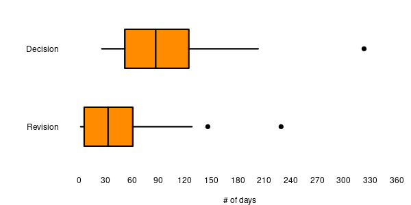

While the previous post on my experience as a reviewer was meant to be somewhat zen, obviously the felt experience as an author is definitely not. It's sometime hard to keep in mind that it is for the betterment of science when receiving comments/critics by strangers on something you worked on for years and were proud enough of to send it to a journal, but well it is the way it is, a common experience we all have to go through. With time it is easier.
The desk-rejects: Of course, as everyone I had my share of desk rejects (i. e. papers rejected by the editor before being sent to reviewers, for those not familiar with the lingo). Most of them goes like this: a paper is written (usually with a specific journal tier, if not precise journal, in mind), it is first sent to bosses or colleagues for a sanity check, those persons like the paper and convince you to send it to a better tier of journal than you previously thought, you adapt the paper to fit those journals, send it, it is rejected, you do the round of all the journals of that better tier before finally sending it to the journal you originally had in mind where it is sent to reviewers and eventually published. Invariably. I never had a paper I didn't originally meant for the highest journal tier end up there. No biggy, no heart break, all is right.
But then I had two other experiences, a tad weirder. The first one was kinda my fault: my 2016 paper used to be called "A quantitative review of Cenozoic diatom deposition". Why? Because, while it has new analyses, it is based on existing data, and the new analyses, in my mind, was akin to a review of those data. So naturally I sent it to a journal A who rejected it for not actually being a review, so I changed the title to what it is now and sent it to journal B who desk rejected it for being a review (that journal did not publish reviews). Eventually I tried my luck at Biogeoscience and everything worked out in the end.
The second one I am still angry about it. I wasn't the corresponding author, one of our students was. The paper was desk-rejected for "scoring too high on the plagiarism detection algorithm". Here's what the "plagiarized" bits were in descending order of occurrences (from memory), and I wish I was joking: the sentence "Manuscript submitted to [Journal]" added by the submission system on top of every pages (!!), some of the references, expressions like "Eocene-Oligocene Transition" and "Benthic Foraminifera Accumulation Rate", and finally a couple of sentence fragments which were weird turns of phrases typical of science writers who are not native english speakers (note that this was a year or so before LLMs were commercially available). An obvious false positive. Obviously the full reason for the rejection that was given was actually "too high score on the plagiarism detection and failure to cite relevant literature", the relevant literature given as examples being all papers written by the editor himself, a decade before. I am not going to name and shame but it is tempting given how infuriating receiving that email was, and how heartbroken the student was. The paper was then sent elsewhere (where they also checked for plagiarism, using I believe the exact same tool, found nothing and moved on to sending it to review) and was published there eventually after a couple of revisions.
Considering the papers for which we actually received reviews, I can only talk here of the ones for which I was corresponding author or for which I was directly involved in revising the paper (i. e. it was either written by one of our students, or we were only 2 or 3 authors, or one of the comments pertain to a bit I was responsible for). Overall I would say that most reviews I ever had were polite, insightful and genuinely trying to help.
Sure, on occasion, some comments are clearly trying to push the reviewers' own interpretation of whichever event or hypothesis the paper is about; but they usually are happy if you just mention their theory, even if to say you don't agree with it, as long as your argument is cogent.
Some comments are frustrating not because they are wrong but because you know they are right and now you have to do a new analysis which will push the revision back by a couple of months (if not years in one case). But you do it anyway because it is indeed absolutely correct, and the paper ends up way better as a result.
Often a reviewer seem to have envisioned a completely different paper as something that should be the target: I get it, I am not gonna do it, but I get it. I do on occasion write weird papers: software or database descriptions that people in my field are not really equipped to review; papers that have a main point and a few other points (I know most people would just write several papers but I don't); papers that take such a widely different approach than what is standard in the field that it occasionally unsettles reviewers. I like my weird papers, and as long as the science in them is correct and accurate, it shouldn't be a probem.
I don't have data for that (shocker!) but I would say overall 5 to 10% of the comments I received were things I did not agree with and refused to incorporate, 5 to 10% seemed ad-hoc and unnecessary that I also argued for not incorporating them but then the rest was indeed changed in agreement with reviews I would say (plus or minus the odd cases when two reviewers disagree and give opposite advices, but usually it is settled by the editor or an additional reviewer).
But very rarely you have some comments that are frankly borderline if not clearly over the limit. The first that comes to mind is of course what every non native speaker has most probably received one day: "The language should be checked by a native speaker". Bonus point in my case as my co-author on most papers was a native speaker. It happens even more frequently when the first author has a definitely non-european name. It frankly reeks of racism. I am sure some people write that without thinking it could be interpreted that way and mean well, but it sure is interpreted that way. Also, again as I said in the previous post, unless a sentence is ambiguous as a result of the language used, this is not the job of a reviewer to comment on the language in my opinion. This is the job of copy-editors. Also it's one hell of a blanket statement: did the reviewer have an issue with a specific sentence? No, the whole text sounds off apparently to them. There "might" be some issues with the language as it was clearly written by barbarians. Also you can express the same thing by the way more neutral: "This paper would benefit from some copy-editing" which at least do not put the onus on the authors and don't make the assumption that there are issues with the language because the authors do not know how to write in english.
I also received a couple other comments that were borderline (questioning my expertise), confidently wrong, or just plainly asinine, but I am not going to detail them as doing so would most probably make it obvious who the reviewers were. They are super rare to be fair (way more common on grant proposal reviews though! the things I read honestly... If I ever want to burn all bridges, I'll make a post about them one day). But they still stick out and they are the ones you keep in mind for years and thus the ones that affect you the most.
Finally, of course, I do have some data on my manuscript revisions :)

Here only round 1 of a submission which actually went to review is taken into consideration.
Overall I was quite lucky to have received, broadly speaking, timely decisions. Most of them between 2 and 4 months after submission, it is reasonnable. The outlier is from a period when submissions were done by emails and not in a submission system, so it's understandable it took longer. And as you can see I tend to take my time for revisions too, so it's all fair I would say.